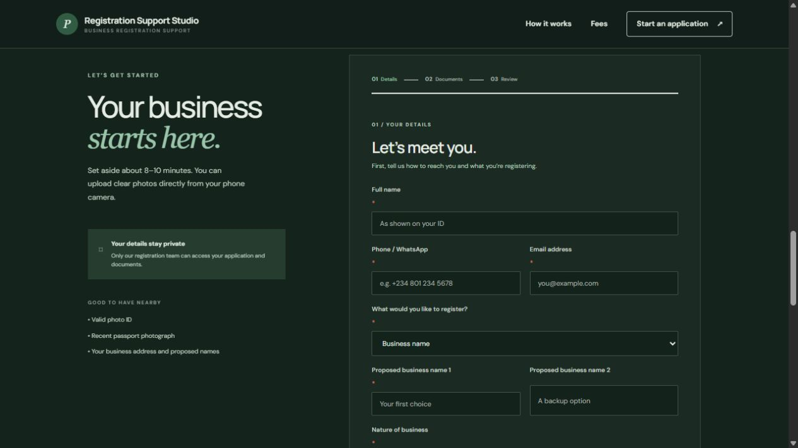
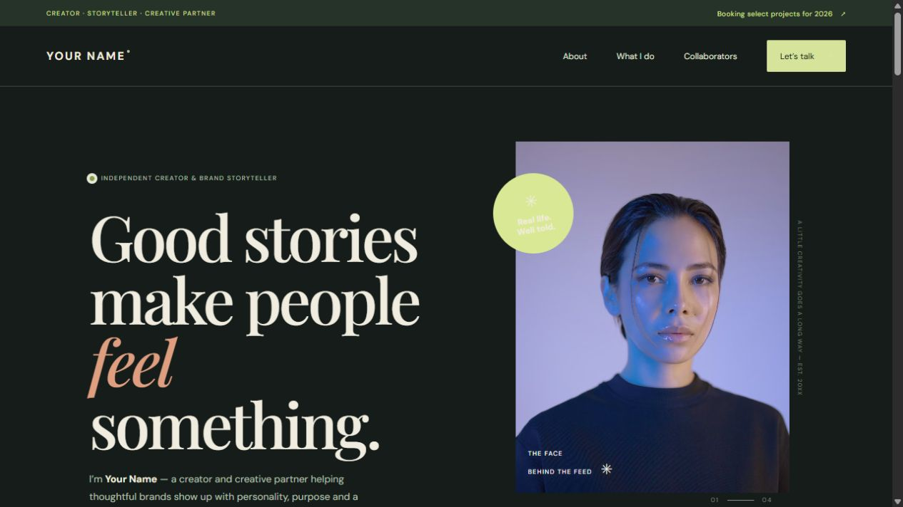
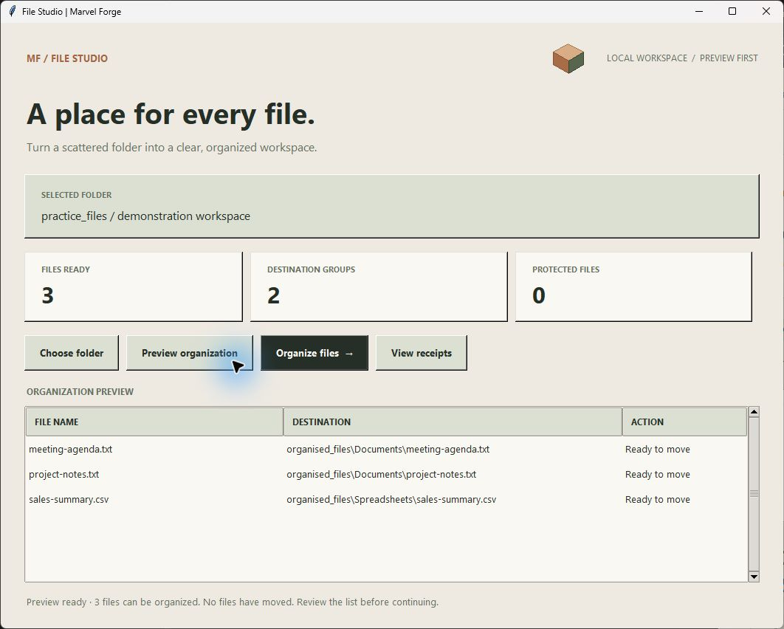

01 / BUILT & DEPLOYED
FINANCIAL VISIBILITY / PYTHON APPLICATION
Where is my capital?
Python dashboards, data presentation, and financial tracking—bringing contributions, withdrawals, holdings, and trading performance into one understandable view.
01 / PROJECTS BUILT
REAL PROBLEMS. THOUGHTFUL SOLUTIONS.Six implemented projects spanning financial dashboards, retail systems, automotive workflows, CAC registration, creator websites, and Python automation.
FINANCIAL VISIBILITY / PYTHON APPLICATION
Python dashboards, data presentation, and financial tracking—bringing contributions, withdrawals, holdings, and trading performance into one understandable view.
RETAIL OPERATIONS / WEB APPLICATION
Translating business needs into software: consignment inventory records, sales, supplier balances, loans, and cash checks in a phone-first workflow.
AUTOMOTIVE OPERATIONS / PYTHON PROTOTYPE
Research and problem definition translated into a connected prototype for workshop activity and customer reporting.
MORE IMPLEMENTED WORK
Additional projects with source implementations, each at a different stage.
PYTHON · FLASK · SQLITE

Guided client intake and staff review, with an API integration in development to connect with the official CAC portal to reduce duplicate entry and manual follow-up.
HTML · CSS · JAVASCRIPT

A developed website draft for presenting services and collaborations. Personalization awaits approved content.
PYTHON · FILE AUTOMATION

A practical file organizer with command-line and button-based interfaces.
Explore actual application interfaces using demonstration records and anonymous branding. Each case study identifies its delivery stage. The creator website is a draft awaiting approved content.
ACTIVE / PROJECT DEVELOPMENT
Projects in development at the blueprint stage. The intended features below are being scoped; implementation and validation are still ahead.
A blueprint-stage companion to the workshop management prototype, giving customers a direct view of their repair journey.
Intended value: fewer update calls and less repeated explanation for the workshop team.
A blueprint-stage online storefront for an independent retailer selling imported products.
Intended value: a convenient shopping journey and a clearer order-management workflow.
04 / YOUR NEXT CHAPTER
AN IDEA. A PROBLEM. A POSSIBILITY.You don’t need a technical brief.
Start with what you’re trying to improve.